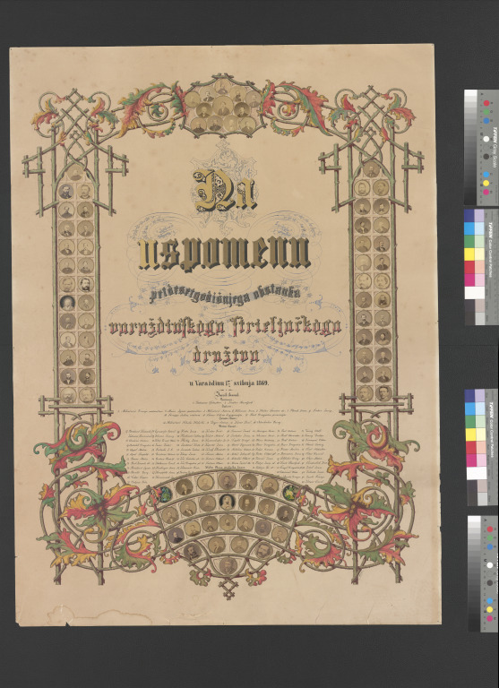
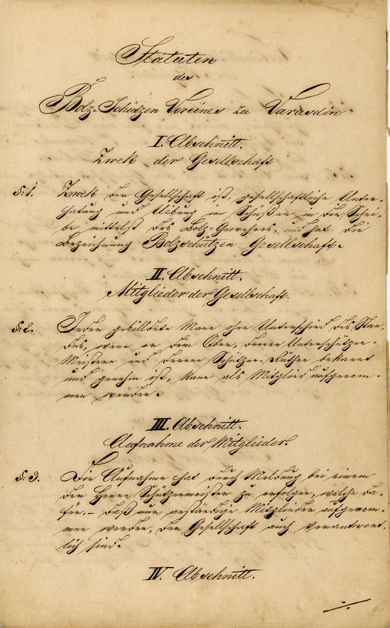
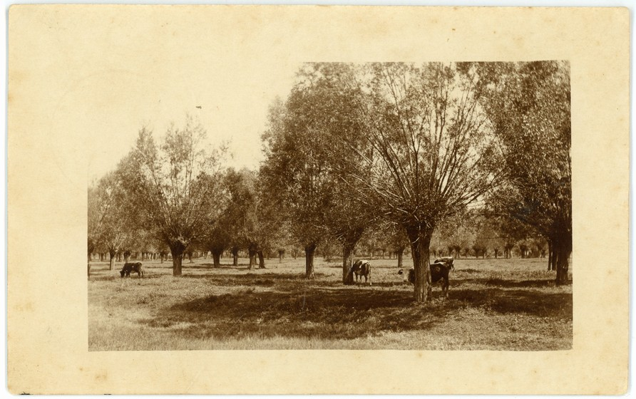
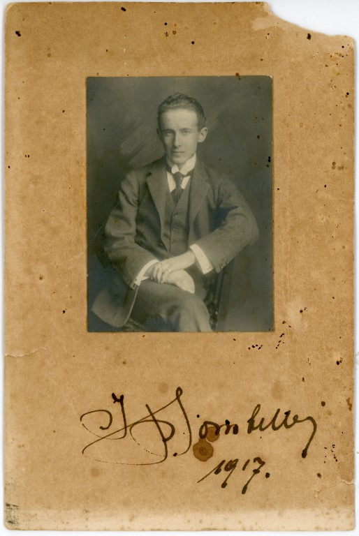
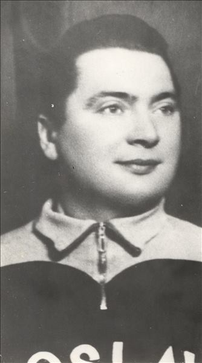
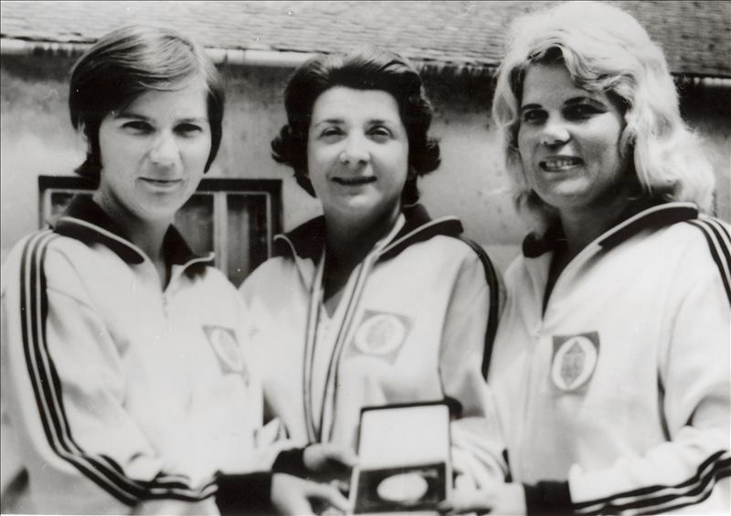
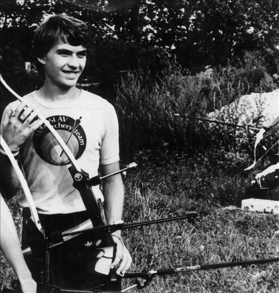
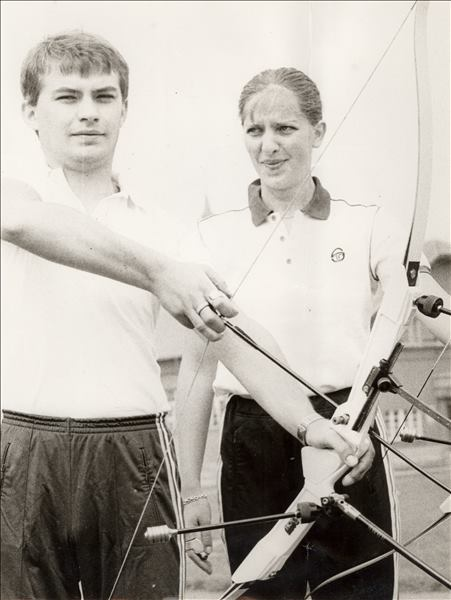
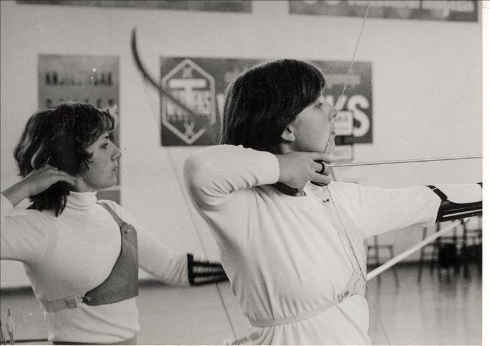

Streljaštvo i streličarstvo
KRONOLOGIJA
19. 5. 1819.
osnovano Streljačko društvo Varaždin


Na uspomenu pedesetgodišnjega obstanka varaždinskoga strieljačkoga društva, Varaždin, 1869., GMV 98749
1820.
izgrađena zgrada streljane u Graberju
26. 10. 1861.
osnovano Družtvo strijelaca sa rilom i sačmom

Statuten der Bolz. Schützen Vereines zu Varasdin/Statut Društva strijelaca rilom u Varaždinu, Varaždin, 1870., GMV PO 2832
1876.
u zgradi streljane u Graberju uređeno gombalište, a ispred jačalište
28. 12. 1900.
na imanju Rudolfa Erdödyja u Novom Marofu takmičenje u gađanju glinenih golubova
1910.
u Vinokovčaku izgrađena vojna streljana

Vinokovčak, 1918., GMV 78423
1913.
Josip Bombelles najbolji u gađanju na glinene golubove u Zagrebu

Josip Bombelles, 1917., GMV 86328
1949.
osnovan Savez streljačkih društava Varaždin
1952.
strijelac Rudolf Vuk nastupa na OI u Helsinkiju

Rudolf Vuk, 1955., GMV 106521
1955.
strijelac Rudolf Vuk prvak Balkana i Jugoslavije u gađanju malokalbarskim pištoljem
1964.
streljana u Dravskoj šumi kod željezničkog mosta
1973.
otvorena nova streljana
1973.
Milan Žedak prvak Hrvatske, malokalibarski pištolj
11. 11. 1973.
osnovan Streličarski klub Varaždin
1975.
ekipa seniorki SK Varaždin druge na državnom prvenstvu
1976.
Stjepan Vučković prvak Hrvatske u gađanju na glinene golubove - trap
1976.
seniorke Varteksa prve u Hrvatskoj, disciplina - malokalibarska puška

Ružica Rožmarić, Radojka Ožeg i Marija Vidranski , 1975., GMV 106520
1978.
August Kunej, drugi na državnom prvenstvu, zračni pištolj
1980.
streličar Zoran Matković na OI u Moskvi - 10. - 11. mjesto
1980.
Zoran Matković, državni prvak

Zoran Matković autor fotografije - Darko Gorenak, Varaždin, oko 1980., GMV 106522
1981.
Zoran Matković, državni prvak
1982.
Zoran Matković, državni prvak
1984.
Zoran Matković, državni prvak

Zvonimira Metličar i Zoran Matković, Varaždin, oko 1980., GMV 106523
Zoran Matković na orvenstvu Europe 5-6. mjesto
1983.
streličarka Zvonimira Metličar državna prvakinja

Sestre Jasminka i Zvonimira Metličar, Varaždin, oko 1980., GMV 106524
1984.
streličarka Zvonimira Metličar državna prvakinja
1984.
streličar Cvjetoslav Zorman državni prvak
1987.
Balkansko prvenstvo u streljaštvu
1987.
streličar Cvjetoslav Zorman državni prvak
1988.
Stjepan Vučković državni prvak, leteće mete - trap
1992.
Cvjetoslav Zorman sudjeluje na europskom prvenstvu
1994.
Cvjetoslav Zorman sudjeluje na europskom prvenstvu, prvak Hrvatske
1995.
Cvjetoslav Zorman državni prvak
1996.
Cvjetoslav Zorman sudjeluje na europskom prvenstvu